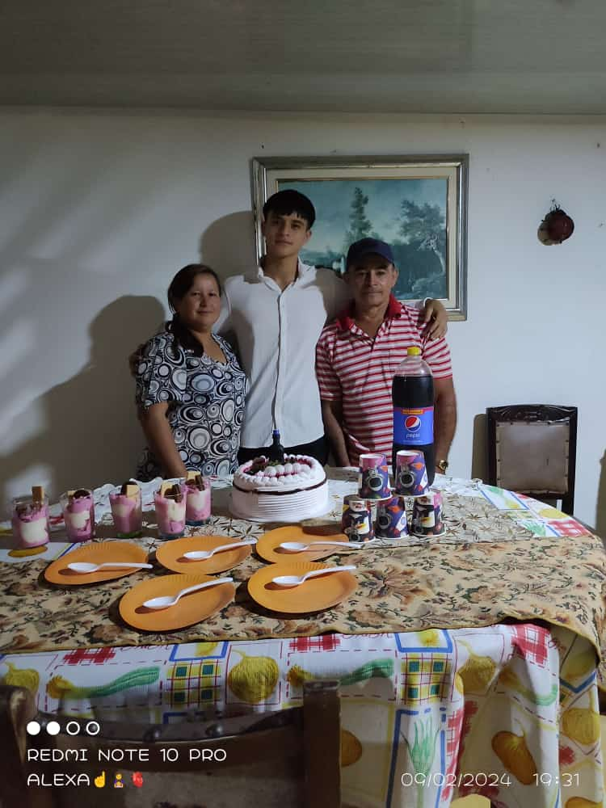

familia familia
familia familia  familia
mi familia mas cercana son mis padres, trabajadores como ellos mismos, son
personas que nuncan se
han dado por
vencidos, no siempre hemos sido tan unidos como ahora y nos gusta compartir
todos los momentos que podamos, no los estoy nombrando a todos ya que
deberia hacer otras dos
paginas como esta, ya que tambien ahi una gatica y tengo otros dos hermanos
y una hermana mayor, de ahi pa delante la descendencia;
pero puedo recalcar que todos a
pesar de no estar juntos somos muy unidos 👌